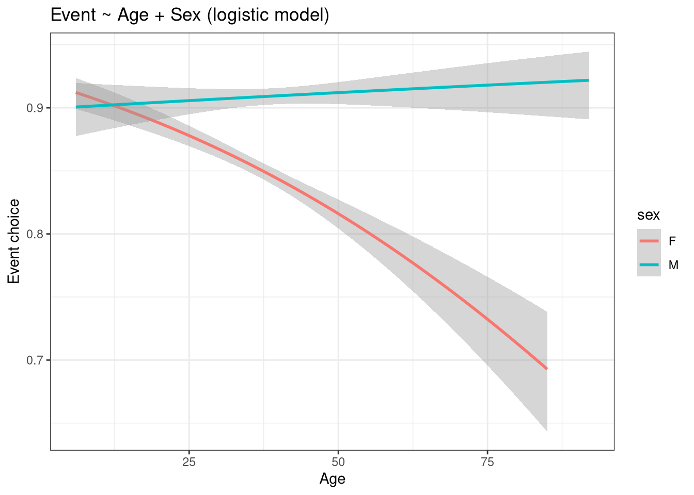
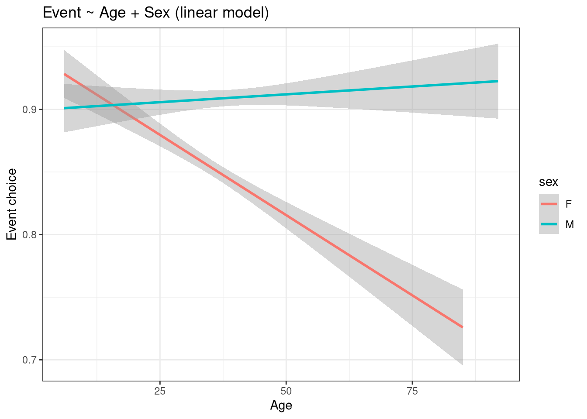
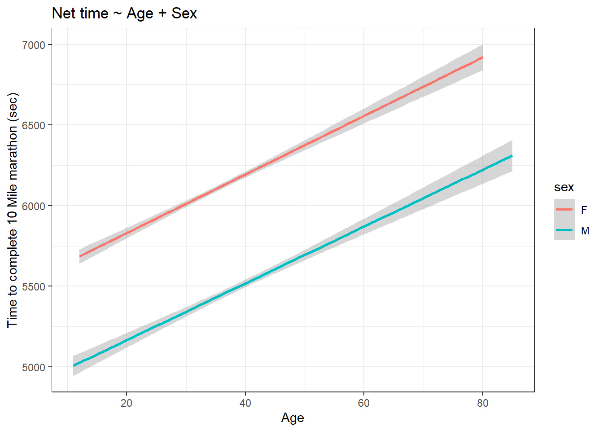
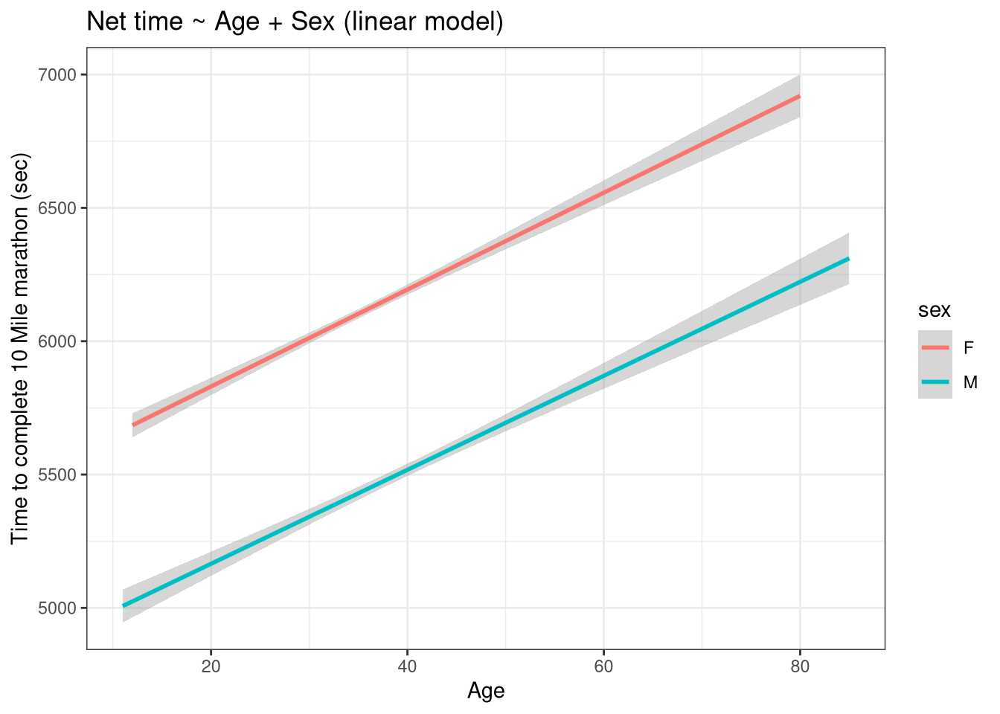
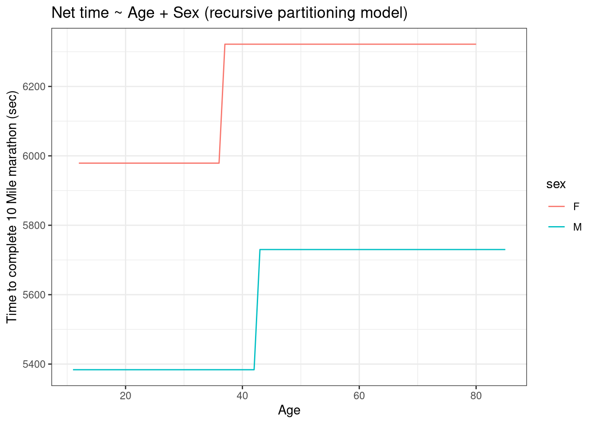
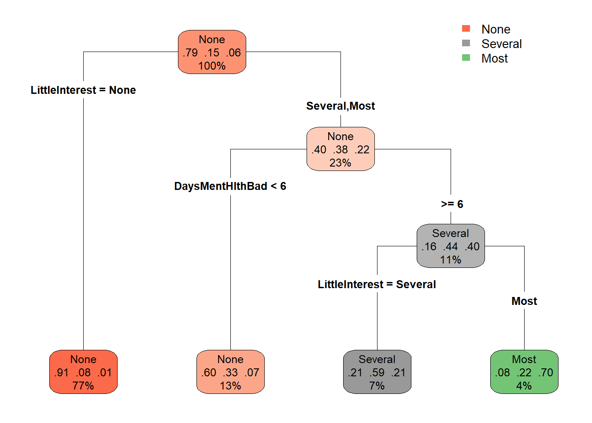

require("https://cdn.jsdelivr.net/npm/juxtaposejs@1.1.6/build/js/juxtapose.min.js")
.catch(() => null)
TL;DR
In this article you will learn;
What is the meaning of a statistical model
- Model functions:
lm(),glm()andrpart() - Model formula:
response ~ formula - Model architectures: linear, logistic, recursive partitioning
- Model functions:
How to build a model
- Building models using functions, formulas and model architectures
- Plotting the model output
How to evaluate a model
- Using the model to predict values outside the data
- Calculating the mean of the square of the prediction errors
- Using error to compare models to aid explanatory variable selection
- Cross-validation technique and model iteration by
cv_pred_error()function - Prediction error for a categorical response variable
How to build a null model
How to do exploratory modelling
- Evaluation of a recursive partitioning model and plotting it
What is a covariate
How to calculate effect size
- For numerical explanatory variables
- For categorical explanatory variables
1 Definition of statistical model
Before we get to know the definition of what a statistical model is, let us first try to understand what a model means. All of us have an intuitive idea of what a ‘model’ is. A model can be a fashion model posing in pretty clothes and makeup or it can be a blueprint which represents the overall layout of a building. In all these understandings of a model, we can summarise that it is representing a relationship.
A statistical model also belongs to the same suite but is made using data. It is also representing ‘relationships’, but between variables within the data. Understanding a statistical model can lead us to understand how the variables within a dataset are related to each other.
Let us consider the graph given below;

The x-axis shows speed and the y-axis shows stopping distance. From the graph, you can see that, as speed increases, the stopping distance also increases. Therefore we can say that the stopping distance linearly increases with speed. To showcase this linear relationship, we can plot a regression line (green line) as shown below.

The regression line can be extended to values outside the dataset and doing so would enable us to predict values outside our dataset, like predicting what the stopping distance will be if the speed was 35 mph. You can also see that many points are away from the regression line and do not lie on it, therefore the linear relationship we predicted for the variables is not a perfect one. Suppose instead of a linear relationship, we fit a polynomial regression line.

In this graph, especially at the extreme ends, most of the points are closer to the regression line than in the earlier case. Therefore, the residual distance, which is the distance between the actual data points and the fitted values by regression lines would be smaller indicating a better fit for the polynomial regression. Therefore a good fit can more accurately represent the relationship between the variables and therefore would have better predictive power. But how do we exactly compare the linear regression and the polynomial regression ‘models’? Is there a metric which would allow this comparison easier? We will learn all about this later in this article.
Going back to the linear regression plot, suppose, instead of speed, we use the colour of the car and see if it affects the stopping distance at a constant speed. For obvious reasons, there should be no effect of colour on the stopping distances (duh!). Nevertheless, now we also know that some variables form relationships and some don’t.
In short, what we essentially were doing was linear modelling, a type of statistical modelling. And this exercise helped us realise that a model can inform us about;
- The relationship between the variables in the data
- Which variables form relationships
- Predict values outside our dataset
- Model comparisons (linear vs polynomial)
The textbook definition for statistical modelling is;
A statistical model is a set of probability distributions P(S) on a sample space (S) (1).
In our previous modelling exercise, we saw how speed affects stopping distance. Here the variable ‘speed’ is called the parameter or otherwise, better called the explanatory variable, which tries to explain the variations seen in the response variable, which is the stopping distance. The model we created was not perfect as there were many data points which did not lie on the regression line. One potential source of this error can arrive from the selection of the explanatory variables. The dataset had stopping distances of a particular vehicle at different speeds. The stopping distance can also be affected by the road terrain (friction) and the efficiency of the brakes, all of which were missing from the dataset. Therefore these parameters that we have not accounted for can also potentially affect our model. So why weren’t those included in the dataset? Often it is time-consuming to keep note of every parameter that can affect the variable we are interested in and therefore, they are often excluded from data collection. Thus, the model created using this data would only be a close approximation of what is happening in the real world. This particular drawback is emphasised in the following aphorism;
“All models are wrong, but some are useful” - George Box (2)
Thus even though our model is not the perfect one1, if it reliably predicts values then the model is considered useful. Thus a statistical model is stochastic.
From a mathematical point of view, an ideal model would contain all the parameters that affect the response variable. Thus the sample space (S) will contain all possible combinations of [explanatory variables, stopping distance] values. Therefore, the set of probability distributions corresponding to all these combinations will be P(S). But in real life, we cannot afford to measure all the parameters concerning the response variable and are only interested in a small set of variables. Thus we often have a subset of the total possible combinations of [explanatory variables, stopping distance] values (\theta), and the corresponding probability distribution for these combinations will be P(\theta). The model thus created with a small set of parameters is called a parametrised statistical model.
For all such models; P(\theta) \subset P(S).
This definition is not exactly needed to do modelling but it’s good to know the actual mathematical definition of what a statistical model is.
Now that we have a rough idea of what a model is, let us know learn how to build models in R.
2 Making life easier
Please install and load the necessary packages and datasets which are listed below for a seamless tutorial session. (Not required but can be very helpful if you are following this tutorial code by code)
# Libraries used in this tutorial
install.packages('cherryblossom')
install.packages('rpart')
install.packages('datasets')
install.packages('NHANES')
install.packages('rpart.plot')
install.packages('mosaicModel')
install.packages('devtools')
devtools::install_github("dtkaplan/statisticalModeling")
# Loading the libraries
tutorial_packages <- c("cherryblossom", "rpart", "datasets", "NHANES",
"rpart.plot", "mosaicModel", "statisticalModeling")
lapply(tutorial_packages, library, character.only = TRUE)
# Datasets used in this tutorial
data("run17") # From cherryblossom
data("ToothGrowth") # From datasets
data("chickwts") # From datasets
data("NHANES") # From NHANES
data("Tadpoles") # From mosaicModel
data("Used_Fords") # From mosaicModel3 Building a model
The pipeline for building a model is as follows;
graph LR subgraph Pipeline for making a statistical model A(Collect data) --> B(Select explanatory<br> and response variables) --> C(Select model architecture) --> D(Build the model) end
The first step in building a model is by acquiring data. Then we need to select the appropriate response variable (dependent variable) and the explanatory variables (independent variable). In a cancer drug trial experiment data, tumour size can be the response variable and the drug type and patient age can be the explanatory variables. After selecting the variables, the model architecture is chosen. In our earlier example, we used a linear model to explain the changes seen in stopping distances with speed. Choosing a model architecture depends on the nature of the data. For now, we will mostly be using the linear model lm(). But throughout the tutorial, we will also see other model architectures. The final step is to build the model, which is done by the computer.
The syntax for building a model in R is as follows;
function(response ~ explanaotry1 + explanatory2, data = dataset_name)3.1 Linear model
Let us try to plot some models using the linear model architecture using the lm()function in R. We will be using the run17 dataset from the {cherryblossom} package in R. The run17 dataset contains details for all 19,961 runners in the 2017 Cherry Blossom Run, which is an annual road race that takes place in Washington, DC, USA. Also, the Cherry Blossom Run has two events; a 10 Mile marathon and a 5 Km run. For now, we will be concerned with participants that participated in the 10 Mile marathon only.
In the dataset, we are interested to check whether the net time to complete the 10 Mile marathon (net_sec) is affected by the age and sex of the participant. So for making the model, we use net_sec as the response variable and, age and sex as the explanatory variables.
We can use the summary() function to summarise the model. For now, we will not worry about the summary details. Then, using the {ggplot2} package, we will plot the model using the stat_smooth() function. Please not that there is another function geom_smooth() which is an alias of stat_smooth(). Both do the same thing.
if (!require(cherryblossom)) install.packages('cherryblossom')
library(cherryblossom)
library(dplyr)
library(ggplot2)
# Checking headers in the data
head(run17)# Filtering the data for 10 Mile marathon participants
run17_marathon <- run17 %>% filter(event == "10 Mile")
# Building a linear model
model_1 <- lm(net_sec ~ age + sex, data = run17_marathon)
# Get the summary of the model
# For now don't worry about the details
summary(model_1)
Call:
lm(formula = net_sec ~ age + sex, data = run17_marathon)
Residuals:
Min 1Q Median 3Q Max
-2814.89 -672.65 -41.43 625.34 3112.81
Coefficients:
Estimate Std. Error t value Pr(>|t|)
(Intercept) 5475.8377 25.8841 211.55 <2e-16 ***
age 17.9157 0.6789 26.39 <2e-16 ***
sexM -674.3765 14.8290 -45.48 <2e-16 ***
---
Signif. codes: 0 '***' 0.001 '**' 0.01 '*' 0.05 '.' 0.1 ' ' 1
Residual standard error: 947.5 on 17439 degrees of freedom
Multiple R-squared: 0.1229, Adjusted R-squared: 0.1228
F-statistic: 1222 on 2 and 17439 DF, p-value: < 2.2e-16# Plotting the model using ggplot2
# Use stat_smooth() function and specify "lm"
run17_marathon %>% ggplot(aes(age, net_sec, col = sex)) +
stat_smooth(method = "lm") +
labs(x = "Age",
y = "Time to complete 10 Mile marathon (sec)",
title = "Net time ~ Age + Sex") +
theme_bw()
From the graph, it seems that female participants take more time to complete the run compared to their male counterparts.
3.2 Logistic model
Now let us try to see whether the participant’s choice in choosing between the events is affected by their age and sex. We can hypothesize that older participants of both sexes would prefer the 5 km run over 10 Mile marathon. Thus, we use the variable event as the response variable and, age and sex as the explanatory variables. We are more interested to see the effect of age as compared to sex, therefore the variable sex is considered a covariate. We will learn later what covariate mean
We will use the lm() function to make a linear model. Here we will convert the event variable to boolean values for it to work with the formula. The corresponding values are; 1 = 10 Mile event and 0 = 5 Km event.
library(cherryblossom)
library(dplyr)
library(ggplot2)
# Converting event variable values into boolean
run17_boolean <- run17
run17_boolean$event <- recode(run17_boolean$event, "10 Mile" = 1, "5K" = 0)
# Building the linear model
model_2 <- lm(event ~ age + sex, data = run17_boolean)
# Plotting the model using ggplot2
run17_boolean %>% ggplot(aes(age, event, col = sex)) +
stat_smooth(method = "lm") +
labs(x = "Age",
y = "Event choice",
title = "Event ~ Age + Sex (linear model)") +
theme_bw()
From the graph, it seems like, for male participants, age doesn’t affect their event choice selection. But for females, compared to males, age does seem to affect it. Therefore older female participants prefer 5 km runs as compared to older male participants.
Let us look at the dataset more closely, especially the response variable.
# Checking the data type of the response variable
class(run17$event)[1] "character"# Printing the unique strings from the response variable
unique(run17$event)[1] "10 Mile" "5K" Our response variable is dichotomous and thus not continuous. The lm() function we used works best for continuous numerical data. So the model architecture we used was not an appropriate one here. So in these situations, we can use the logistic modelling architecture. Both logistic modelling and linear modelling are part of generalised linear modelling. We can use the glm() function in R and specify family = binomial to have a logistic model.
The syntax for a logistic model in R is;
glm(response_variable ~ explanatory_variable, data = dataset_name, family = "binomial")Now let us try the glm() function and make a logistic model for the earlier case.
library(cherryblossom)
library(dplyr)
library(ggplot2)
# Converting event variable values into boolean
run17_boolean <- run17
run17_boolean$event <- recode(run17_boolean$event, "10 Mile" = 1, "5K" = 0)
# Building the logistic model
model_3 <- glm(event ~ sex + age, data = run17_boolean, family = "binomial")
# Plotting the model using ggplot2
# Use stat_smooth() function and specify "glm"
run17_boolean %>% ggplot(aes(age, event, col = sex)) +
stat_smooth(method = "glm", method.args = list(family = "binomial")) +
labs(x = "Age",
y = "Event choice",
title = "Event ~ Age + Sex (logistic model)") +
theme_bw()
The graph looks very similar to the earlier one. For easy comparison, both the graphs are shown next to each other below. Please use the slider to compare between the graphs.
Code
library(dplyr)
library(ggplot2)
library(cherryblossom)
run17_boolean <- run17
run17_boolean$event <- recode(run17_boolean$event, "10 Mile" = 1, "5K" = 0)
# Linear model
run17_boolean %>% ggplot(aes(age, event, col = sex)) +
stat_smooth(method = "lm") +
labs(x = "Age",
y = "Event choice",
title = "Event ~ Age + Sex (linear model)") +
theme_bw()
# Logistic model
run17_boolean %>% ggplot(aes(age, event, col = sex)) +
stat_smooth(method = "glm", method.args = list(family = "binomial")) +
labs(x = "Age",
y = "Event choice",
title = "Event ~ Age + Sex (logistic model)") +
theme_bw()library(dplyr)
library(ggplot2)
library(cherryblossom)
run17_boolean <- run17
run17_boolean$event <- recode(run17_boolean$event, "10 Mile" = 1, "5K" = 0)
# Linear model
run17_boolean %>% ggplot(aes(age, event, col = sex)) +
stat_smooth(method = "lm") +
labs(x = "Age",
y = "Event choice",
title = "Event ~ Age + Sex (linear model)") +
theme_bw()
# Logistic model
run17_boolean %>% ggplot(aes(age, event, col = sex)) +
stat_smooth(method = "glm", method.args = list(family = "binomial")) +
labs(x = "Age",
y = "Event choice",
title = "Event ~ Age + Sex (logistic model)") +
theme_bw()
4 Model evaluation
After building the model, we can evaluate it by providing new inputs to the model to get corresponding predicted output values. The predicted output values can then be cross-checked against the original output values and see how far off they are in terms of prediction (i.e. the prediction error). Using the predict() function, we can predict for values outside the dataset or evaluate the model using the prediction error.
4.1 Prediciting values
We will go back to the first example where we checked if the net time to complete the 10 Mile marathon (net_sec) is affected by the age and sex of the participants. We will create dummy data of participants with random age and sex values and use the model to predict their net time to complete the race.
library(cherryblossom)
# Creating dummy data of different ages
male <- data.frame("age" = c(seq(1, 100, 2)),
"sex" = c(replicate(50, "M")))
female <- data.frame("age" = c(seq(1, 100, 2)),
"sex" = c(replicate(50, "F")))
dummy_data <- rbind(male, female)
# Filtering the data for 10 Mile marathon participants
run17_marathon <- run17 %>% filter(event == "10 Mile")
# Building the linear model
model_lm <- lm(net_sec ~ age + sex, data = run17_marathon)
# Predicting values
dummy_data$net_sec <- predict(model_lm, newdata = dummy_data)
# Plotting the predicted values
dummy_data %>% ggplot(aes(age, net_sec, col = sex)) +
geom_point() +
scale_x_continuous(breaks = seq(0, 100, by = 5)) +
labs(x = "Age",
y = "Time to complete the marathon (sec)",
title = "Predicted values") +
theme_bw()
In the plot, we can see that we have babies as young as 1 year old, who have been predicted to have completed the 10 Mile marathon faster that their older participants. So what on earth did we do to get these results?

Let us look the linear model plot that we had earlier.

You can see that there is a general trend of increasing ‘net time to complete the race’ as the ‘age’ value increases and decreasing net time as age decreases. Therefore our linear model favours reduced net times for lesser values of age, which is what we see as predicted values.
So our model has its limitations in predicting values for a certain range of age😅.
The moral of the story here is that models trained on data can be a bit wild when evaluated outside the range of the data. So we have to be mindful of its prediction abilities, otherwise, we can end up with superhuman babies who can run marathons faster than anyone.

4.2 Evaluating a model
Instead of predicting new values outside the dataset, we can use the same dataset used for model training to predict values. Utilizing these predicted values, we can compare them back to the original values and calculate the prediction error. This is one way to compare different models and see which models predict values closer to the original values in the dataset.
We will use our earlier made linear model, where we looked at whether the total time to complete the race is affected by age and sex. We will also make a new model using the ‘recursive partitioning model architecture’ using the same dataset so that we can have a model to compare with. Using the rpart() function in the {rpart} package in R, we can build a recursive partitioning model. The rpart() model works for both numerical (dichotomous and discontinuous) and categorical data. We will learn more about rpart models later in this article.
if (!require(rpart)) install.packages('rpart')
library(cherryblossom)
library(dplyr)
library(ggplot2)
library(rpart)
# Checking headers in the data
head(run17)# Filtering the data for 10 Mile marathon participants
run17_marathon <- run17 %>% filter(event == "10 Mile")
# Building a linear model
model_lm <- lm(net_sec ~ age + sex, data = run17_marathon)
# Building a recursive partitioning model
model_rpart <- rpart(net_sec ~ age + sex, data = run17_marathon)
# Predicting values
lm_predict <- predict(model_lm, newdata = run17_marathon)
rpart_predict <- predict(model_rpart, newdata = run17_marathon)
# Calculating error values
lm_error <- with(run17_marathon, net_sec - lm_predict)
rpart_error <- with(run17_marathon, net_sec - rpart_predict)
# Printing few error values
head(as.data.frame(lm_error))head(as.data.frame(rpart_error))Now we have data frames containing error values calculated between each of the original values in the dataset to the predicted values from the model. You can see that it’s tedious to compare the error values of the linear model to the logistic model, also some of these error values are negative, which makes the comparison even harder. So how can we know which model is better? Calculating the mean of the square of the prediction errors (m.s.e) would be a great way to start. The m.s.e will reflect the magnitude and not the sign of the errors.
# Calculate the mean of the square of the prediction errors (m.s.e)
mean(lm_error ^ 2, na.rm = T)[1] 897630mean(rpart_error ^ 2, na.rm = T)[1] 905886.9The linear model has a lower error value compared to the recursive partitioning model. Therefore the fitted values in the linear model are closer to the actual value in the dataset compare to the other model.
We can also plot the predicted values and see how they look. Please use the slider to compare the graphs.
Code
library(ggplot2)
library(dplyr)
# Filtering the data for 10 Mile marathon participants
run17_marathon <- run17 %>% filter(event == "10 Mile")
# Plotting the linear model
run17_marathon %>% ggplot(aes(age, net_sec, col = sex)) +
stat_smooth(method = "lm") +
labs(x = "Age",
y = "Time to complete 10 Mile marathon (sec)",
title = "Net time ~ Age + Sex (linear model)") +
theme_bw()
# Adding rpart predicted values to the dataset
rpart_predict <- predict(model_rpart, newdata = run17_marathon)
run17_marathon$rpart_fitted_values <- rpart_predict
# Plotting the recursive partitioning model
run17_marathon %>% ggplot(aes(age, rpart_predict, col = sex)) +
geom_line() +
labs(x = "Age",
y = "Time to complete 10 Mile marathon (sec)",
title = "Net time ~ Age + Sex (recursive partitioning model)") +
theme_bw()library(ggplot2)
library(dplyr)
# Filtering the data for 10 Mile marathon participants
run17_marathon <- run17 %>% filter(event == "10 Mile")
# Plotting the linear model
run17_marathon %>% ggplot(aes(age, net_sec, col = sex)) +
stat_smooth(method = "lm") +
labs(x = "Age",
y = "Time to complete 10 Mile marathon (sec)",
title = "Net time ~ Age + Sex (linear model)") +
theme_bw()
# Adding rpart predicted values to the dataset
rpart_predict <- predict(model_rpart, newdata = run17_marathon)
run17_marathon$rpart_fitted_values <- rpart_predict
# Plotting the recursive partitioning model
run17_marathon %>% ggplot(aes(age, rpart_predict, col = sex)) +
geom_line() +
labs(x = "Age",
y = "Time to complete 10 Mile marathon (sec)",
title = "Net time ~ Age + Sex (recursive partitioning model)") +
theme_bw()
4.3 Choosing the explanatory variables
In this exercise, we will use the ToothGrowth dataset from the {datasets} package in R. The dataset is from an experiment that looked at the effect of vitamin C on tooth growth in guinea pigs. In the experiment, three different doses of vitamin C were administered to 60 guinea pigs. Vitamin C was administered either through orange juice or ascorbic acid. The length of odontoblasts (cells responsible for tooth growth) was measured to check for tooth growth.
We will be creating a linear model to check if tooth growth is affected by vitamin C dosages. At the same time, there is also a chance that tooth growth is affected by the method of vitamin C administration. Therefore, we have the choice of choosing between ‘vitamin C dosage’ and the ‘method of vitamin C administration’ as the explanatory variables. So how do we know which of these variables is better at predicting tooth growth values? To find the best predictor, we can first build a model using ‘vitamin C dosage’ as the only explanatory variable. Then later, we can build yet another model using both ‘vitamin C dosage’ and the ‘method of vitamin C administration’ as the explanatory variables. Then similiar to the ealrier case, we can use the mean of the square of the prediction errors can see which model is better.
In the ToothGrowth dataset, the variable len contains the length of the odontoblasts, supp contains the method of vitamin C administration (VC - ascorbic acid, OJ - Orange juice) and dose contains the dosage of vitamin C administered in mg/day units.
if (!require(datasets)) install.packages('datasets')
library(datasets)
data("ToothGrowth")
# Building a linear model with only dose
model_dose <- lm(len ~ dose, data = ToothGrowth)
# Building a linear model with dose + supp
model_dose_supp <- lm(len ~ dose + supp, data = ToothGrowth)
# Predicting values using the trained dataset
predict_dose <- predict(model_dose, newdata = ToothGrowth)
predict_dose_supp <- predict(model_dose_supp, newdata = ToothGrowth)
# Calculating error values
error_dose <- with(ToothGrowth, dose - predict_dose)
error_dose_supp <- with(ToothGrowth, dose - predict_dose_supp)
# Calculate the mean of the square of the prediction errors
mean(error_dose ^ 2, na.rm = T)[1] 341.2716mean(error_dose_supp ^ 2, na.rm = T)[1] 344.6941You can see that the model with both vitamin C dosage and method of vitamin C administration as the explanatory variables has a greater error value compared to the model with only vitamin C dosage. Therefore adding the method of vitamin C administration as the explanatory variable did not improve the model and therefore can be excluded from the analysis.
4.4 Cross validation
So far we have been using the training dataset for predicting values. But there is a problem in using it for our analysis as it allows models with the additional explanatory variable to have smaller prediction errors than the base model. Let’s see what this means in the following code.
Here we use the chickwts dataset from the {datasets} package in R. In this dataset, there are two variables, weight which tells the weight (g) of the chick measured after 6 weeks and the feed variable, which tells the type of feed that was given to the chicks for those 6 weeks. There were 6 different types of feed used. The experiment was done to check whether the feed type has any effect on the weights of the chick.
Here we will build a linear model with weight as the response variable and feed type as the explanatory variable. Then we will make a random variable within the dataset which contains values which have no explanatory power. It will be filled with random numbers which have no relationship with the original data. We will build yet another linear model like earlier but this time we shall use both the feed type and the random variable as the explanatory variable. Adding a random variable to the model should cause the model to perform poorly and therefore should lead to an increased m.s.e value when compared to the model with just the feed type variable as the explanatory variable. Let us see if that’s the case here.
library(datasets)
data("chickwts")
# Creating a random variable
# The variable contains random numbers
set.seed(231)
chickwts$random <- rnorm(nrow(chickwts))
# Building a linear model with only feed
model_feed <- lm(weight ~ feed, data = chickwts)
# Building a linear model with dose + random
model_feed_random <- lm(weight ~ feed + random, data = chickwts)
# Predicting values using the trained dataset
predict_feed <- predict(model_feed, newdata = chickwts)
predict_feed_random <- predict(model_feed_random, newdata = chickwts)
# Calculating error values
error_feed <- with(chickwts, weight - predict_feed)
error_feed_random <- with(chickwts, weight - predict_feed_random)
# Calculate mean of the square of the prediction errors (m.s.e)
mean(error_feed ^ 2, na.rm = T)[1] 2754.31mean(error_feed_random ^ 2, na.rm = T)[1] 2725.115Well, quite a surprise, right? The model with the random variable is having a lower error value as compared to the model with the correct explanatory variable. We will see later (not in this article though) why the error value was lower. But for now, keep in mind that when you use the same dataset to do both training and prediction in a model, the model with the additional explanatory variable will have smaller prediction errors than the base model, as seen here. Therefore this mistake can throw off our analysis and gives us a false positive that some of the explanatory variables form a relationship with the response variable when in reality there is no effect.
To mitigate this problem, we use a technique called ‘cross-validation’. In this technique, we split the original data into two parts; a training set and a testing set. Both sets will have data points that are chosen at random from the original dataset. We train our model using the training set and then test our model using the testing set and then calculate the m.s.e. value. Thus the explanatory variable values in the testing set will be novel to the model. Let us see how we can do this.
We will be reusing our earlier example of chick weight and feed type.
In the code given below, the rnorm(nrow(chickwts)) > 0 function will assign TRUE and FALSE values at random to the row values. Looking at this function more closely, the rnorm() function will choose random numbers up to the number of rows in the dataset, and since there is an inequality (greater than zero), it will assign TRUE if the random number is greater than zero and vice versa. The row values with TRUE will go to the training set and rows with FALSE will form the testing set.
library(datasets)
data("chickwts")
# Creating training set
set.seed(231)
chickwts$training_set <- rnorm(nrow(chickwts)) > 0
chickwts$random <- rnorm(nrow(chickwts)) > 0
# Building the linear model using the training set
model_feed <- lm(weight ~ feed, data = subset(chickwts, training_set))
# Building the linear model using the training set but with random variable
model_feed_random <- lm(weight ~ feed + random, data = subset(chickwts, training_set))
# Predicting values using the testing set
# !training_set means row values with FALSE value
predict_feed <- predict(model_feed, newdata = subset(chickwts, !training_set))
predict_feed_random <- predict(model_feed_random, newdata = subset(chickwts, !training_set))
# Calculating error values using the testing data
error_feed <- with(subset(chickwts, !training_set), weight - predict_feed)
error_feed_random <- with(subset(chickwts, !training_set), weight - predict_feed_random)
# Calculate the mean of the square of the prediction errors (m.s.e)
mean(error_feed ^ 2, na.rm = T)[1] 2830.79mean(error_feed_random ^ 2, na.rm = T)[1] 2732.715For the seed I have set, using the cross-validation method, we seem to not solve the problem we had earlier. The model with the random variable as the explanatory variable still has a lower error value as compared to the model without the random variable. But this was just an opportunistic case, as the training and testing sets are chosen at random. You might not get the same result as mine if you run this code (provided that the set.seed() is changed). We can deal with this randomness by rerunning the calculation many times to get a more consistent measure of the error value.
We will use the cv_pred_error() function from the statisticalModeling package to rerun the calculations many times. The function automatically makes the training and testing sets using the original dataset and also calculates the m.s.e for each trial. In the code given below, we store the results from the cv_pred_error() function into a variable called ‘trials’. The variable ‘trials’ will have two columns in it; mse which denotes the mean of the square of the prediction errors (m.s.e) and model which denotes the name of the model given as input. Then in the final step, we compare the m.s.e values between the model using a simple t-test.
if (!require(devtools)) install.packages('devtools')
if (!require(statisticalModeling)) devtools::install_github("dtkaplan/statisticalModeling")
library(statisticalModeling)
library(datasets)
data("chickwts")
# Creating a random variable
# The variable contains random numbers
set.seed(231)
chickwts$random <- rnorm(nrow(chickwts)) > 0
# Building a linear model with only feed
model_feed <- lm(weight ~ feed, data = chickwts)
# Building a linear model with dose + random
model_feed_random <- lm(weight ~ feed + random, data = chickwts)
# Rerunning the models (100 times for each model)
trials <- cv_pred_error(model_feed, model_feed_random, ntrials = 100)
# Compare the two sets of cross-validated errors
t.test(mse ~ model, data = trials)
Welch Two Sample t-test
data: mse by model
t = -5.9019, df = 197.95, p-value = 1.537e-08
alternative hypothesis: true difference in means between group model_feed and group model_feed_random is not equal to 0
95 percent confidence interval:
-118.53296 -59.16003
sample estimates:
mean in group model_feed mean in group model_feed_random
3309.232 3398.079 For \alpha = 0.05 level of significance, we have a p-value < 0.05, which means that the mean error values between the models are not the same and are different from each other. From the t-test summary, we can see that the mean error value of the model without the random variable is lower than the model with the random variable (3309.232 < 3398.079). Therefore we can conclude that the addition of the random variable does not improve the model.
Therefore through the cross-validation technique iterated over many times, in conjunction with the m.s.e values, we can identify which of the variables in our data should be considered as the explanatory variables.
4.5 Prediction error for categorical response variable
So far when we were calculating the predictive error values, the response variable we had was numerical. But what if our response variable was a categorical value, then how will we compare models using the predictive error values?
Let us go back to the run17 dataset from the {cherryblossom} package in R. In this dataset, we looked at whether the participants’ choice of event was influenced by their age and sex. We hypothesised that the older participants of both sexes will prefer the 5 Km run as compared to the 10 Mile marathon. In the earlier example, we have used the logistic model, but here let us use the recursive partitioning model made using the rpart() function in the {rpart} package in R. We had learned briefly that the recursive partitioning model is appropriate when the response variable is categorical, which is the case here.
Like earlier, we will use event as the response variable and sex and age as the explanatory variable. The hypothesis remains the same, irrespective of sex, older participants will prefer the 5 Km run as compared to the 10 Mile marathon. We will build two models, one with only age as the explanatory variable and the other with both age and sex as the explanatory variables.
While predicting for values, we use type = "class" so that the model gives prediction values, which are either “10 Mile” or “5 Km” (gives prediction values as categorical values).
Then we will evaluate these two models by comparing the m.s.e values. This will tell us whether adding the variable sex improves the model or not.
library(cherryblossom)
library(dplyr)
library(rpart)
# Creating training set
set.seed(123)
run17$training_set <- rnorm(nrow(run17)) > 0
# Training the model with the training set
# Building the recursive partitioning model with just age
model_rpart_age <- rpart(event ~ age, data = subset(run17, training_set))
# Building the recursive partitioning model with age + sex
model_rpart_age_sex <- rpart(event ~ age + sex, data = subset(run17, training_set))
# Predicting values using the testing set
predict_age <- predict(model_rpart_age,
newdata = subset(run17, !training_set), type = "class")
predict_age_sex <- predict(model_rpart_age_sex,
newdata = subset(run17, !training_set), type = "class")
# Printing a few row values
head(predict_age) 1 2 3 4 5 6
10 Mile 10 Mile 10 Mile 10 Mile 10 Mile 10 Mile
Levels: 10 Mile 5Khead(predict_age_sex) 1 2 3 4 5 6
10 Mile 10 Mile 10 Mile 10 Mile 10 Mile 10 Mile
Levels: 10 Mile 5Khead(run17$event)[1] "10 Mile" "10 Mile" "10 Mile" "10 Mile" "10 Mile" "10 Mile"In the first 6 row values of the output, both models seem to agree with the values from the original dataset. But our dataset has 199961 rows of data. It would be crazy to even think that one can compare each of the row values between the models instead, we will try to quantify the error. In earlier cases, we could subtract the predicted values from the response variable values in the dataset to get the error value. But that is not possible here as the response variable is categorical.
One way to calculate the error values of these models is to see how many mistakes the model made. This can be calculated by checking how many times the predicted value by the model was not equal to the value in the dataset.
# Calculating the sum of errors using the testing data
with(data = subset(run17, !training_set), sum(predict_age != event))[1] 1254with(data = subset(run17, !training_set), sum(predict_age_sex != event))[1] 1254The number of errors each model made is the same. Before we conclude anything let us try to see some more ways to quantify the error.
Instead of sum, we can calculate the mean rate of errors also.
# Calculating the mean of errors using the testing data
with(data = subset(run17, !training_set), mean(predict_age != event))[1] 0.1243061with(data = subset(run17, !training_set), mean(predict_age_sex != event))[1] 0.1243061Mean error values are the same (no surprises here).
Let us go one step further. Till now our model predicted a deterministic value to the response variable. It can either be 10 Mile marathon or a 5 km run. Instead of this, we can use the model to predict the probability values to the categorical values present in the response variable. This means, our model will predict how likely a certain participant of a particular age and sex will choose between a 10 Mile marathon and a 5 Km run. To predict probability values, instead of type = "class", we will use type = "prob" within the predict() function.
# Predicting probability values using the testing set
predict_age_prob <- predict(model_rpart_age,
newdata = subset(run17, !training_set), type = "prob")
predict_age_sex_prob <- predict(model_rpart_age_sex,
newdata = subset(run17, !training_set), type = "prob")
# Comparing the predicted value to the actual value in the dataset
testing_data <- run17 %>% select(training_set, event) %>% filter(training_set == F)
compare_values <- data.frame(testing_data, predict_age_prob, predict_age_sex_prob)
# Changing the column names for making sense of the column values
colnames(compare_values)[c(3:6)] <- c("Ten_Mile_age", "Five_km_age", "Ten_Mile_age_sex", "Five_km_age_sex")
# Printing a few row values
head(compare_values)The columns Ten_Mile_age and Five_km_age corresponds to probability values from the model_rpart_age model with just ‘age’ as the explanatory variable. The last two columns Ten_Mile_age_sex and Five_km_age_sex are from the model_rpart_age_sex model with both ‘age’ and ‘sex’ as the explanatory variables. The first-row value in the 10Mile_age column indicates that the model predicts a nearly 88% chance for that particular participant to be choosing the 10 Mile marathon. And with no surprise, you can see that the probability values across the models are the same (because we found that the error values are the same earlier).
We can condense these probability values to a single value which is called the ‘likelihood value’, which can then be used as a figure of merit to compare the models. This is similar to the mean of the square of the prediction errors (m.s.e) we had when the response variable was numerical. The likelihood values are calculated by multiplying the individual probability values. But since the probability values are in decimal values and are less than 1, multiplying them will lead to a very small value which would be difficult to compare. Therefore we first log transform our probability values and add them, which is mathematically equivalent to multiplying them before the log transformation
Since the dataset is not ‘tidy’, some codes are used to tidy it. The “10 Mile” has a space in-between. While doing analysis, R might register “10 Mile” as “10” and “Mile”. So this needs to be reformatted.
# Splitting the data frame into two other data frames
# Newly made data frames have values corresponding to the respective model
compare_values_age <- compare_values[,1:4]
compare_values_age_sex <- compare_values[,c(1,2,5,6)]
# Tidying the data
compare_values_age$event <- recode(compare_values_age$event,
"10 Mile" = "Ten_Mile", "5K" = "Five_km")
compare_values_age_sex$event <- recode(compare_values_age_sex$event,
"10 Mile" = "Ten_Mile", "5K" = "Five_km")
# Calculating the likelihood values
# Ten_Mile_age and Five_km_age are column names
likelihood_age <- with(compare_values_age,
ifelse(event == "Ten_Mile", Ten_Mile_age, Five_km_age))
likelihood_age_sex <- with(compare_values_age_sex,
ifelse(event == "Ten_Mile", Ten_Mile_age_sex, Five_km_age_sex))
# Likelihood value of model with age
sum(log(likelihood_age)) [1] -3785.999# Likelihood value of model with age + sex
sum(log(likelihood_age_sex)) [1] -3785.999As the likelihood values are one and the same we can conclude that the variable ‘sex’ does not improve the model.
4.6 Creating a null model
The null model gives the best estimate of our data when there are no explanatory variables modelled to it. The predicted value from the null model will always be a constant, no matter what testing data is provided. Let us see how to make a null model.
We will again use the run17 dataset from the {cherryblossom} package in R. To this dataset we add a new column which contains a constant value. We will make a model where net_sec is the response variable and the constant variable is the explanatory variable. We will use the recursive partitioning architecture to model the data.
library(cherryblossom)
library(rpart)
# Creating a constant variable
run17$constant <- 10
# Creating a null model
null_model <- rpart(net_sec ~ constant, data = run17)
# Predicting values
# Notice how all the values are the same
predict_null <- predict(null_model, newdata = run17)
# Prinitng a few predicted values
# Notice how all the predicted values are the same
head(predict_null)[1] 5427.947 5427.947 5427.947 5427.947 5427.947 5427.947We can calculate the mean of the square of the prediction errors of the null model. The null model essentially acts as a base of our model analysis, where we can compare the errors in the null model to the model of our interest.
library(cherryblossom)
library(rpart)
# Creating a constant variable
run17$constant <- 10
# Creating training set
set.seed(12)
run17$training_set <- rnorm(nrow(run17)) > 0
# Creating a null model using the training set
null_model <- rpart(net_sec ~ constant, data = subset(run17, training_set))
# Predicting values using the testing set
predict_null <- predict(null_model,
newdata = subset(run17, !training_set))
# Prinitng a few predicted values
head(predict_null)[1] 5436.2 5436.2 5436.2 5436.2 5436.2 5436.2# Calculating error values using testing set
error_null <- with(subset(run17, !training_set), net_sec - predict_null)
# Calculate the mean of the square of the prediction errors (m.s.e)
mean(error_null ^ 2, na.rm = T)[1] 2273954# Calculating m.s.e by iterating the model 100 times
trials <- cv_pred_error(null_model)
# Printing m.s.e values for each iteration
head(trials$mse)[1] 2289640 2289445 2289692 2289697 22898025 Exploratory modelling
Till now, we had a clear idea of the selection of the explanatory variables while making a model. But sometimes, you might just want to explore your dataset and see which variables affect your response variable without prior knowledge of it. Therefore, we can do exploratory modelling where we take a whole bunch of explanatory variables and see if any of them explain the changes seen in the response variable.
For this exercise, we will be using the NHANES dataset from the {NHANES} package in R. The dataset is a survey data collected by the US National Centre for Health Statistics (NCHS). A total of 75 variables concerning health are collected as data from around 7800 individuals in the US.
5.1 Evaluating a recursive partitioning model
For our exploratory modelling, we will be using the recursive partitioning architecture. Using the dataset we will see what variables are related to depression.
We will use the formula Depressed ~ .
The single period on the right side of the Tilda indicates that we want to model using all the possible variables in the dataset. Finally, we will plot the model as a ‘tree’ using the rpart.plot() function from the {rpart.plot} package in R.
if (!require(NHANES)) install.packages('NHANES')
if (!require(rpart.plot)) install.packages('rpart.plot')
library(NHANES)
library(rpart)
library(rpart.plot)
# Building the recursive partitioning model
model_rpart <- rpart(Depressed ~ . , data = NHANES)
# Plotting the model with sample sizes
rpart.plot(model_rpart, extra = 1, type = 4)
We got this nice-looking tree plot with lots of information. Let’s see how to interpret them.
The response variable that we used was the Depressed variable in the dataset. This variable has three levels.
levels(NHANES$Depressed)[1] "None" "Several" "Most" The meaning of each of these levels is; “None” = No sign of depression, “Several” = Individual was depressed for less than half of the survey period days, “Most” = Individual was depressed more than half of the days.
The colour code in the plot corresponds to the levels of the response variable. In the beginning node of the tree plot, you can see the label “None” with three sets of numbers. The numbers correspond to the respective sample numbers of the levels, i.e. at this node, 5246 individuals belong to “None”, 1009 individuals belong to “Several” and 418 individuals belong to “Most”. Therefore we have data for a total of 6673 individuals (5256 + 1009 + 418 = 6673). Also, in this node, the majority of individuals belong to the level “None”. Therefore the node is coloured by the respective colour code for “None”, which is orange colour here. You can also see that the node colour changes its brightness to correspond to the difference between the majority value and the other values.
Working with numbers can be tricky, so let us represent the sample sizes in percentiles for easy comparisons.
# Plotting the model with percentile values
rpart.plot(model_rpart, extra = "auto", type = 4)
Now instead of the actual sample sizes, we have percentile values. Now let us look at the plot. The beginning node which contains the whole set of depressed individuals in the dataset is further split into two groups and this split is caused by the variable LittleInterest. The variable LittleInterest in the dataset denotes the self-reported number of days where the participant had little interest in doing things. And like the Depressed variable, we have three levels for the variable LittleInterest.
levels(NHANES$LittleInterest)[1] "None" "Several" "Most" The meaning of these levels is the same as explained for the Depressed variable.
The first group contains 77% of the total depressed individuals and they recorded zero days where they had reduced interest to do things. The rest of the 23% individuals belong to the second group which showed a severe reduction or most severe reduction in interest in doing things. This second group is further split into two by the variable DaysMentHlthBad which denotes the self-reported number of days the participant’s mental health was not good out of the past 30 days. Here, 13% of people in the second group with 23% of the total set had bad mental days less than 6. The remaining 11% of people (13% + 11% = ~ 23% of the second group) had bad mental days for more than 6 days, which further splits into two by their categories in the LittleInterest variable. There is no splitting of the group after this. This is because the recursive partitioning architecture stops at a point where further subdivisions don’t lead to a big change in predictive ability.
So as a summary, by this exploratory modelling exercise, we were able to determine potential variables that could act as the explanatory variables for a given response variable that we are interested in. Overall this led us to understand the relationships between the variables in the dataset that otherwise would not have been possible with a simple linear model. But also keep in mind that these potential variables are not indicating a cause and effect, but rather a simple relationship.
6 Covariate
We briefly learned what are covariates when we were looking at the run17 dataset from the {cherryblossom} package in R. In that exercise, we looked at whether the participant’s choice in choosing between the events is affected by their age and sex. We hypothesized that older participants of both sexes would prefer a 5 km run over the 10 Mile marathon. Therefore we considered age as the main explanatory variable and sex as a covariate.
Covariates are those variables which are of no immediate interest to the user but hold the potential to explain changes seen in the response variable. There is no special distinction between a covariate and an explanatory variable in the formula syntax of the function R code. It’s just a mental label given by the user.
Let us use the Tadpoles dataset from the {mosaicModel} package in R. The dataset contains the swimming speed of tadpoles as a function of the water temperature and the water temperature at which the tadpoles had been raised. Since size is a major determinant of speed, the tadpole’s length was measured as well. It was hypothesized that tadpoles would swim faster in the temperature of water close to that in which they had been raised.
As an exercise, let us see if the maximum swimming speed achieved by the tadpole is affected by the temperature at which they were raised. In addition, let also add the size of the tadpole as a covariate, as size could also affect the swimming speeds. The variable vmax denotes the maximum swimming speed (mm/sec) and therefore will be our response variable. The variable group denotes whether the tadpoles were raised in a cold environment (“c”) or warm environment (“w”) and length denotes the length of the tadpole (mm). Here both group and length will be our explanatory variables where length is also our covariate.
While predicting values using the model, we can keep the covariate unchanged or constant, and predict different values for the other variable.
if (!require(mosaicModel)) install.packages('mosaicModel')
library(mosaicModel)
data(Tadpoles)
# Building a linear model
model_vmax <- lm(vmax ~ group + length, data = Tadpoles)
# Predicting for vmax
predict_vmax <- predict(model_vmax, newdata = Tadpoles)
head(predict_vmax) 1 2 3 4 5 6
27.08018 27.11388 25.32803 27.31605 27.51822 26.57476 # Keeping length constant, predicting for vmax
predict(model_vmax, newdata = data.frame(group = "c" ,length = 5)) 1
26.2378 predict(model_vmax, newdata = data.frame(group = "w" ,length = 5)) 1
25.25733 So while keeping length constant, our model predicts change in swimming speeds between cold and warm environments the tadpoles were raised in.
7 Effect sizes
Effect sizes are a great way to estimate the change in the output value, given the change in the input. Thus they are a great tool to analyse covariates in the model.
While calculating the effect size, the units of it depend on both the response variable and the explanatory variable for which the effect size is measured.
If we have a response variable called ‘salary’ (Dollars) and we have a numerical explanatory variable called the ‘years of education’ (years), then the effect size of ‘years of education on the ’salary’ would be in the units of dollars/year. Suppose we get an effect size of 100 dollars/year, this means that for every unit increase in years of education, the salary will increase by 100 dollars.
Here the effect size is calculated as a rate of change and its unit will be;
\begin{align*} Unit\,of\,effect\,size = \frac{Unit\,of\,response\,variable}{Unit\,of\,explaratory\,variable} \end{align*}But if our explanatory variable is categorical, then the effect size is calculated as a difference. As categorical values have no units, the units of effect sizes here would be the same as that of the response variable.
Suppose we have a response variable called ‘rent’ (Dollars) and we have a categorical explanatory variable called ‘city’. Let us say the variable ‘city’ has two levels; Chicago and New York. The meaning of effect size values in this context would be the numerical difference in the response variable when input is changed from one category to another. If our effect size in moving from Chicago to New York is 500 Dollars, then this means that the rent increases by 500 when we move from Chicago to New York.
Here the calculated effect size is will have the same unit as the response variable
Look at the following exercise, we will use the Used_Fords dataset in the {mosaicModel} package in R. The dataset contains details about used Ford cars. We will see if the price of the cars (Price) has any relationship with both, how old the car is (Age) and the colour of the car (Color). We will build two linear models using Price as the response variable. But one model will have Age and the other will have Color as the explanatory variable. The units are; Price = USD and Age = years
We will calculate the effect sizes using the effect_size() function from the {statisticalModeling } package. The effect_size() function takes in two arguments; the model and a formula indicating which variable to vary when looking at the model output. The effect size to Age will be represented in dollars/year and the effect size to Colour will be represented as a difference in dollars when changing from one colour to another.
library(mosaicModel)
library(statisticalModeling)
data(Used_Fords)
# Building a linear model with only age
model_car_age <- lm(Price ~ Age, data = Used_Fords)
# Calculating the effect sizes by varying age
effect_size(model_car_age, ~ Age)Effect size to Age is represented in the slope column. The value is -1124, which means for every unit increase in the age of the car (1-year increase), the price of the car depreciates by 1124 dollars.
# Building a linear model with only colour
model_car_age <- lm(Price ~ Color, data = Used_Fords)
# Calculating the effect sizes by varying colour
effect_size(model_car_age, ~ Color, Color = "blue", to = "red")For categorical explanatory variables, the effect_size() function automatically takes appropriate levels. However, we can manually change this behaviour. From the given code, the effect size to colour is calculated when the colour of the car changes from blue to red. Here the effect size is represented in the change column. The value is -3290. This means that the price of the car reduces by 3290 dollars when the colour of the car changes from blue to red.
8 Conclusion
I hope this article provided you with a good learning experience. In a nutshell, we learned;
What is the meaning of a statistical model
- Model functions:
lm(),glm()andrpart() - Model formula:
response ~ formula - Model architectures: linear, logistic, recursive partitioning
- Model functions:
How to build a model
- Building models using functions, formulas and model architectures
- Plotting the model output
How to evaluate a model
- Using the model to predict values outside the data
- Calculating the mean of the square of the prediction errors
- Using error to compare models to aid explanatory variable selection
- Cross-validation technique and model iteration by
cv_pred_error()function - Prediction error for a categorical response variable
How to build a null model
How to do exploratory modelling
- Evaluation of a recursive partitioning model and plotting it
What is a covariate
How to calculate effect size
- For numerical explanatory variables
- For categorical explanatory variables
Take a break and practice the concepts learned from this tutorial. I will see you in the next tutorial where we will learn about ‘Intermediate statistical modelling using R’. See you there 👍
References
1.
McCullagh P. What is a statistical model? The Annals of Statistics 30, 2002. doi: 10.1214/aos/1035844977.
2.
Box GEP. Science and Statistics. Journal of the American Statistical Association 71: 791–799, 1976. doi: 10.1080/01621459.1976.10480949.
Footnotes
Which is almost impossible to create under real-life conditions↩︎
Reuse
Citation
BibTeX citation:
@online{johnson2022,
author = {Johnson, Jewel},
title = {Introduction to Statistical Modelling in {R}},
date = {2022-08-04},
url = {https://sciquest.netlify.app//tutorials/stat_model/intro_stat_model.html},
langid = {en}
}
For attribution, please cite this work as:
Johnson J. Introduction to
statistical modelling in R [Online]. 2022. https://sciquest.netlify.app//tutorials/stat_model/intro_stat_model.html.